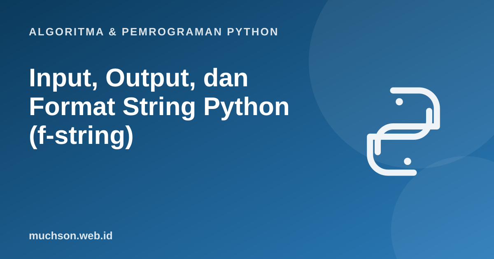

Beranda › Artikel › Algoritma & Pemrograman Python
Algoritma & Pemrograman PythonInput, Output, dan Format String Python (f-string)
Program yang berguna berinteraksi dengan penggunanya: menerima data dan menampilkan hasil yang rapi. Materi ini membahas fungsi input() dan print(), cara memproses masukan yang selalu berupa teks, dan f-string untuk mengatur tampilan angka seperti uang, persen, dan tabel.
Sebaiknya sudah paham: variabel dan tipe data, operator dasar

Setelah membaca dan mencoba materi ini, Anda mampu:
- menampilkan keluaran dengan print dan mengatur sep dan end
- membaca masukan dengan input dan mengonversinya ke tipe yang tepat
- membaca beberapa nilai sekaligus dari satu baris
- memformat keluaran dengan f-string: lebar, perataan, presisi, ribuan, dan persen
print: parameter yang jarang dipakai tetapi berguna
print("Halo", "dunia") # dipisah spasi
print("a", "b", "c", sep="-") # a-b-c
print("tanpa baris baru", end=" ")
print("lanjut di baris sama")
print("x =", 5, "y =", 7.5)
print() # baris kosongHalo dunia
a-b-c
tanpa baris baru lanjut di baris sama
x = 5 y = 7.5
input: selalu menghasilkan teks
Fungsi input() menampilkan teks petunjuk (opsional), menunggu pengguna menekan Enter, lalu mengembalikan apa yang diketik sebagai str. Karena itu angka harus dikonversi. Penelusuran berikut memakai masukan "Dewi" dan "17"; perhatikan tipe tiap variabel pada panel memori.
Jika pengguna mengetik "tujuh belas", int() akan menimbulkan ValueError dan program berhenti. Menangani masukan yang salah dibahas pada materi exception handling. Untuk sementara, anggap masukan selalu benar.
Membaca beberapa nilai dalam satu baris
a, b = map(int, input().split())
print("Jumlah:", a + b)
print("Rata-rata:", (a + b) / 2)Jumlah: 7
Rata-rata: 3.5
f-string: format yang mudah dibaca
Awali string dengan f dan taruh ekspresi di dalam kurung kurawal. Setelah titik dua, Anda dapat menambahkan spesifikasi format.
nama, harga, diskon = "Buku", 1234567.891, 0.256
print(f"Barang: {nama}")
print(f"Harga : {harga:,.2f}") # pemisah ribuan, 2 desimal
print(f"Diskon: {diskon:.1%}") # persen, 1 desimal
print(f"Kode : {42:05d}") # lebar 5, diisi nol
print(f"|{'kiri':<8}|{'tengah':^8}|{'kanan':>8}|")
print(f"{255:b} {255:o} {255:x} {255:X}") # biner, oktal, heksa
print(f"{3.14159:8.3f}|") # lebar 8, 3 desimal
print(f"{nama=}") # menampilkan nama dan nilainyaBarang: Buku
Harga : 1,234,567.89
Diskon: 25.6%
Kode : 00042
|kiri | tengah | kanan|
11111111 377 ff FF
3.142|
nama='Buku'
| Spesifikasi | Arti | Contoh dan hasil |
|---|---|---|
| :.2f | Pecahan dengan 2 desimal | {3.14159:.2f} → 3.14 |
| :, | Pemisah ribuan | {1234567:,} → 1,234,567 |
| :>10 | Rata kanan, lebar 10 | {"a":>10} → " a" |
| :<10 | Rata kiri | |
| :^10 | Rata tengah | |
| :05d | Bilangan bulat, lebar 5, awalan nol | {42:05d} → 00042 |
| :.1% | Persen | {0.256:.1%} → 25.6% |
| :b :x :o | Biner, heksa, oktal | {255:x} → ff |
| :e | Notasi ilmiah | {12345.678:.2e} → 1.23e+04 |
Contoh: struk belanja yang rapi
barang = [("Beras 5kg", 1, 68000), ("Minyak 1L", 2, 18500), ("Telur 1kg", 1, 31000)]
total = 0
print(f"{'Barang':<12}{'Qty':>4}{'Harga':>10}{'Subtotal':>12}")
print("-" * 38)
for nama, qty, harga in barang:
sub = qty * harga
total += sub
print(f"{nama:<12}{qty:>4}{harga:>10,}{sub:>12,}")
print("-" * 38)
print(f"{'TOTAL':<26}{total:>12,}")Barang Qty Harga Subtotal
--------------------------------------
Beras 5kg 1 68,000 68,000
Minyak 1L 2 18,500 37,000
Telur 1kg 1 31,000 31,000
--------------------------------------
TOTAL 136,000
1. Tulis program yang membaca dua bilangan bulat (satu per baris), lalu mencetak hasil bagi bulat dan sisanya dengan format "17 dibagi 5 = 3 sisa 2".
a = int(input()); b = int(input())
print(f"{a} dibagi {b} = {a // b} sisa {a % b}")2. Cetak nilai 1234.5 sebagai "Rp 1.234,50" (gaya Indonesia). Petunjuk: format dulu dengan koma ribuan lalu tukar tanda.
s = f"{1234.5:,.2f}" # 1,234.50
print("Rp " + s.replace(",", "X").replace(".", ",").replace("X", ".")) menghasilkan Rp 1.234,50.3. Mengapa input() + 1 menimbulkan error?
int(input()) + 1.- print punya parameter sep dan end untuk mengatur pemisah dan akhir baris.
- input() selalu menghasilkan str, konversi sendiri ke int atau float.
- f-string dengan spesifikasi format menyederhanakan tampilan angka dan tabel.
- Pemisahan masukan satu baris: map(int, input().split()).
Tanya jawab
Apa bedanya f-string dengan format() dan %?
str.format() dan operator % masih berfungsi, tetapi f-string direkomendasikan untuk kode baru.Bagaimana menampilkan kurung kurawal literal di f-string?
f"{{ dan }}" mencetak { dan }.Bagaimana membaca banyak baris masukan sampai selesai?
for baris in sys.stdin: setelah import sys, yang sering dipakai pada soal kompetisi.Referensi
- Dokumentasi Python: Input and Output (tutorial)
- Dokumentasi Python: Format Specification Mini-Language
- PEP 498, Literal String Interpolation
- Allen B. Downey, Think Python (edisi ke-3), buku teks terbuka